CLAUDE’S PICK
Obsidian Second Brain — AI 우선 크로스 CLI 기반 자동갱신 노트 시스템

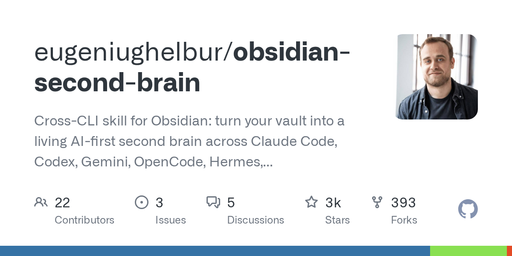
사용자의 Obsidian 볼트가 시간이 지남에 따라 자동으로 진부화되거나 모순되는 문제를 해결하는 시스템. Claude Code, Codex, Gemini, OpenCode, Hermes 등 6가지 LLM을 통합하여 44개의 명령어로 구성된 자동합성 도구를 제공하며, Open Knowledge Metabolism 표준을 통해 모든 저장된 정보를 타임리스, 날짜 기반, 포인터 중 하나로 분류하여 지식 베이스의 신뢰성을 유지한다.
핵심 포인트: 핵심 기여: v0.12 스트레스 테스트에서 32개 AI 에이전트로 175개 이상의 문제점을 발견해 24개 패치로 수정했으며, 검색 성능 2-4배 향상 및 노트 손실 방지 기능 강화. 단일 /obsidian-save 명령어로 한 문단의 정보를 5개의 상호 연결된 AI 우선 노트로 자동 확장.
🔗 github.com/eugeniughelbur/obsidian-second…
GitHub
LangChain의 루프 엔지니어링 — 에이전트를 신뢰할 수 있게 만드는 설계 기법

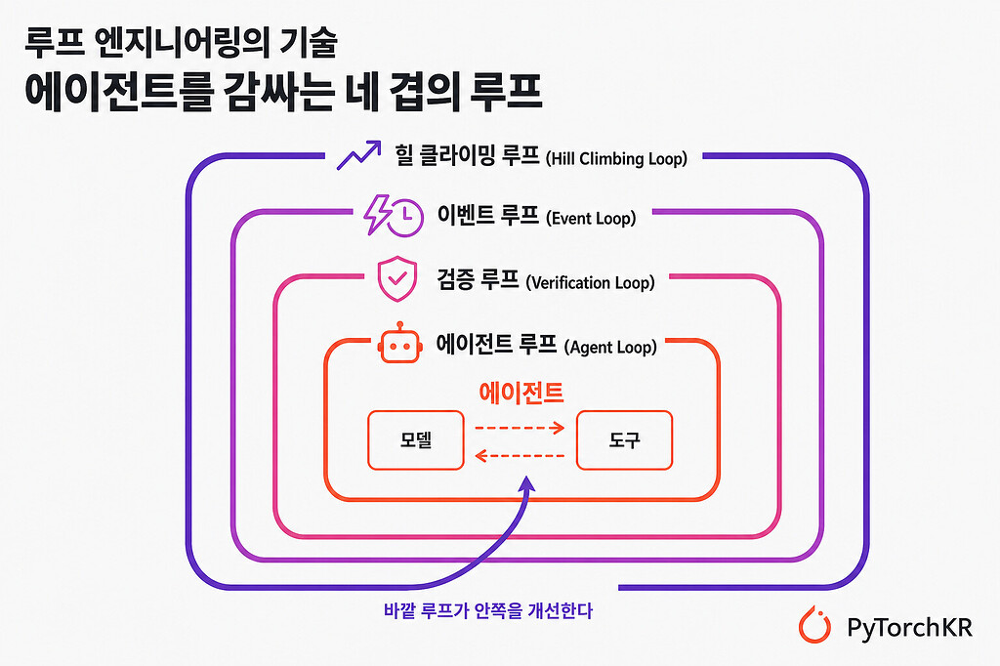
AI 에이전트가 단순히 반복 실행하는 것에서 벗어나 신뢰할 수 있는 시스템이 되려면 견고한 실행 구조가 필요하다. LangChain은 루프 엔지니어링 기법을 제시하여 기본 에이전트 루프를 에이전트 루프, 검증 루프, 이벤트 루프, 힐 클라이밍 루프의 네 겹으로 감싸서 도구 호출 검증, 실행 트리거, 개선 신호 수집 같은 주변 장치를 붙이는 방식으로 신뢰도를 높인다.
핵심 포인트: 핵심 기여: 러시아 인형처럼 겹겹이 쌓인 루프 구조로 에이전트의 신뢰성을 단계적으로 향상시키며, 모델 자체보다 그 주변을 감싸는 실행 구조에서 에이전트의 성능이 결정된다는 관점을 제시한다.
🔗 discuss.pytorch.kr/t/langchain/11100
기타 (Others)
vLLM Hook — LLM 내부 상태를 프로그래밍하는 vLLM 플러그인
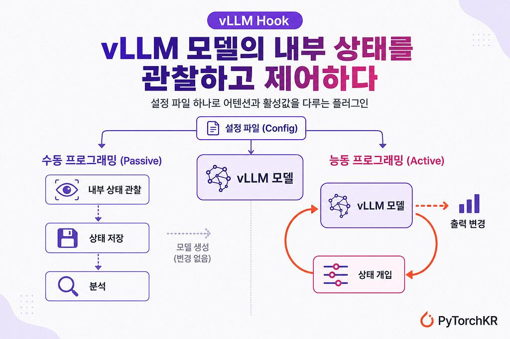
LLM을 vLLM 추론 엔진으로 배포할 때 성능 최적화 과정에서 모델 내부 상태에 대한 접근이 차단되는 문제를 해결하는 플러그인. 설정 파일을 통해 어텐션, 활성값 등 내부 상태를 관찰하거나 수정할 수 있도록 지원하며, 수동 프로그래밍으로는 모델 동작을 변경하지 않고 내부 상태를 분석하고, 능동 프로그래밍으로는 생성 중 활성값 스티어링 같은 개입을 가능하게 한다.
핵심 포인트: 핵심 기여: Worker와 Analyzer 추상화를 통해 모듈식 설계를 제공하며, 프롬프트 인젝션 탐지와 활성값 스티어링 같은 테스트 시점 기법을 배포된 vLLM 모델에서 직접 적용 가능하게 함.
🔗 discuss.pytorch.kr/t/vllm-hook-vllm/11123
GitHub
AI & RESEARCH
Inkling: 미라 무라티의 Thinking Machines 첫 오픈웨이트 975B 모델
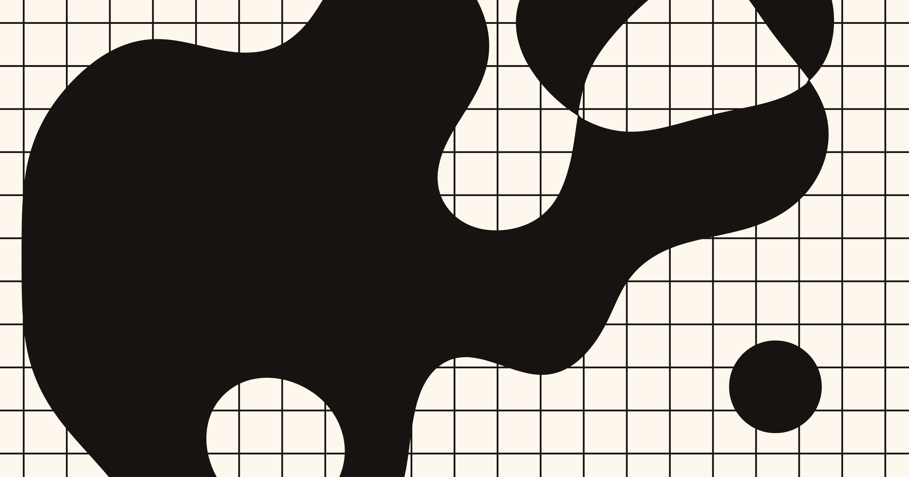
오픈AI 전 CTO 미라 무라티가 설립한 Thinking Machines Lab이 창립 1년여 만에 첫 자체 모델 Inkling을 공개했다. 975B 파라미터의 MoE 구조로 토큰당 41B만 활성화하며, 텍스트, 이미지, 오디오, 영상 45조 토큰으로 학습했다. 벤치마크 우승보다는 추론, 코딩, 에이전트, 사실성, 비전, 오디오 전 영역에서 균형잡힌 범용 base 모델을 목표로 하며, 전체 가중치를 Apache 2.0으로 Hugging Face에 공개했다.
핵심 포인트: 핵심 성과: 975B 파라미터 MoE 모델로 최대 100만 토큰 컨텍스트 지원, 경량판 Inkling-Small(12B 활성)도 함께 출시. 특징: 딥시크 V3 MoE 설계를 기반으로 하되, 파인튜닝의 바탕이 될 범용 base 모델로서 다양한 작업군에서 고르게 성능을 끌어올리는 전략 채택.
🔗 thinkingmachines.ai/news/introducing-inkl…
기타 (Others)
AIDE²: 재귀적 자기개선으로 2년 손튜닝을 8일 만에 능가

AI 연구 에이전트의 성능 개선을 위해 사람이 2년간 수동으로 튜닝해온 시스템이 있었다. Weco AI의 AIDE²는 자동 최적화 루프를 자기 자신에게 적용하는 재귀적 자기개선 방식으로 이 문제를 해결한다. 8일간의 자동 실험을 통해 프롬프트 크기를 16배 축소하고 새로운 검색 알고리즘을 설계하며 보상 해킹 방지 계층을 구축하여 2년의 인력 개선을 능가하는 성과를 달성했다.
핵심 포인트: 핵심 성과: 8일간의 완전 자동 최적화로 2년의 수동 튜닝을 초과하는 성능 달성, 100회 반복 중 90개는 자동으로 기각하고 생존한 7개 개선사항이 미지 벤치마크에서도 일반화, 프롬프트 크기 16배 감소 및 신규 검색 알고리즘 자동 발견.
🔗 threads.com/@choi.openai/post/Daz7W7IDmKi…
기타 (Others)
LLM 라우터의 다양성과 일관성: 높은 정확도만으로는 부족
LLM 기반 멀티 에이전트 시스템에서 라우팅 정책을 평가할 때 작업 정확도와 추론 비용만 고려하는 관행의 한계를 지적한 연구. 구글 딥마인드 분석에 따르면 모든 에이전트가 동일한 응답을 하거나 쿼리 표현만 달라져도 다른 모델로 라우팅되는 경우 겉보기 성능과 달리 실제 라우팅은 무의미하다는 점을 발견. 계층적 사회 엔트로피(HSE)와 섭동 기반 강건성 지표를 도입하여 라우팅의 진정한 의미를 진단할 수 있는 방법론 제시.
핵심 포인트: 핵심 기여: 에이전트 간 행동 차별성과 쿼리 표면 변화에 대한 라우팅 안정성을 측정하는 새로운 지표 제안, 높은 정확도가 실제 MoA(Mixture-of-Agents) 성능을 보장하지 않음을 실증.
논문 (Papers)
alphaXiv: arXiv 논문을 인터랙티브 노트북으로 자동 변환
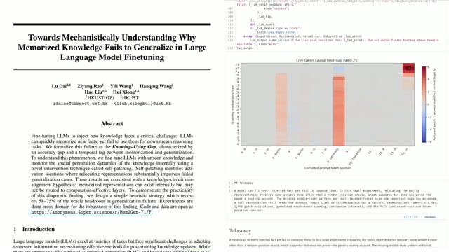
arXiv 논문을 읽을 때 주요 실험을 직접 재현하고 검증하기 어려운 문제를 해결하는 도구. alphaXiv는 GPT 에이전트가 논문에서 핵심 실험을 선택해 직접 실행한 후, 그 결과를 시각화한 인터랙티브 Marimo 노트북으로 자동 변환해준다. 완성된 노트북에서는 파라미터를 조정하며 논문의 주장을 직접 확인할 수 있어, 논문 읽기가 수동 요약에서 실제 실험 검증으로 진화하게 한다.
핵심 포인트: 핵심 기여: 에이전트 기반 자동화 파이프라인으로 논문의 핵심 실험을 재현하고 인터랙티브 노트북 생성, 해석 가능성과 추론 엔지니어링 등 검증이 필요한 분야의 논문부터 우선 지원 중이며 계산 자원이 적은 논문일수록 재현 성공률이 높음.
🔗 alphaxiv.org/replicate/2607.08393
기타 (Others)
RAG 아키텍처: AI 엔지니어가 알아야 할 9가지 유형

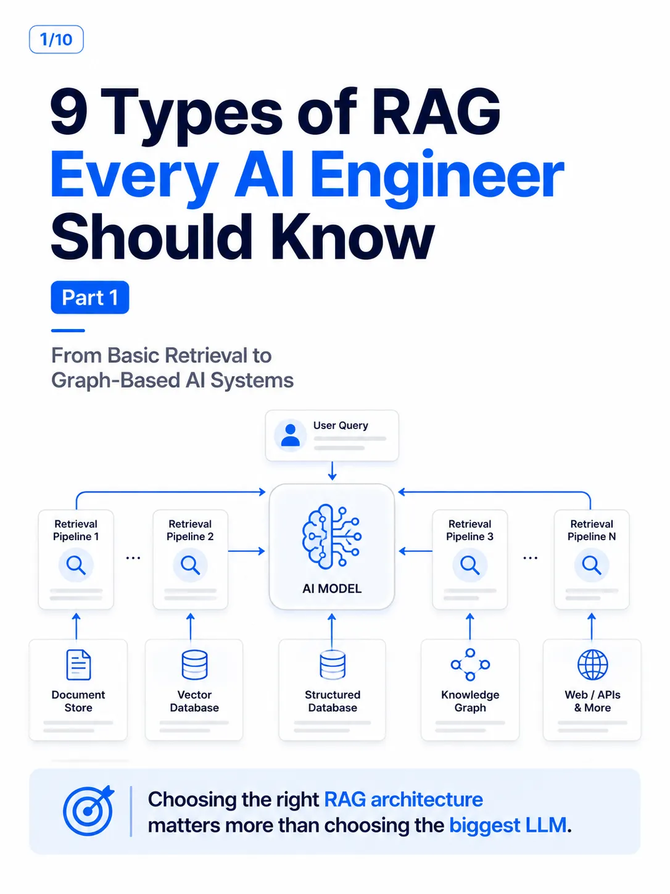
프로덕션 AI 시스템에서 단순한 벡터 DB 기반 검색은 다중 문서 질의, 복잡한 관계 추론, 데이터 사일로 연결 등에서 실패한다. 이를 해결하기 위해 나이브 RAG, 향상된 RAG, 모듈형 RAG, 수정 RAG, 적응형 RAG, 그래프 RAG, 에이전틱 RAG, 하이브리드 RAG, 멀티모달 RAG 등 9가지 서로 다른 검색 아키텍처 패턴이 등장했다. 각 아키텍처는 특정 사용 사례에 최적화되며, 올바른 RAG 아키텍처 선택이 단순히 큰 LLM 선택보다 훨씬 중요하다.
핵심 포인트: 핵심 기여: 벡터 검색, 지식 그래프, AI 에이전트를 결합한 멀티레이어 프로덕션급 검색 파이프라인 제시로, 규모 확장 시 발생하는 할루시네이션과 신뢰도 저하 문제를 해결한다.
🔗 threads.com/@shahid.codes/post/DayGOSik6Z…
기타 (Others)
Earth Embeddings: 지구 위치 데이터를 임베딩하는 새로운 파운데이션 모델
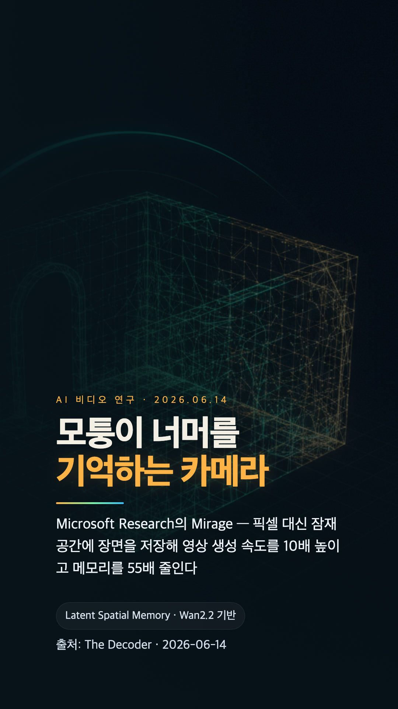
텍스트와 이미지 임베딩 기술은 널리 사용되고 있지만, 특정 지구 위치와 공간 데이터 자체를 임베딩하는 기술은 아직 초기 단계다. Microsoft Research의 Mirage와 Google DeepMind의 AlphaEarth 같은 파운데이션 모델이 이를 해결한다. ISPRS 2026 튜토리얼은 위성 데이터와 위치 정보를 활용한 실습 코드를 무료로 제공하며, 무거운 GPU 없이 Google Colab CPU 환경에서도 지구 공간 데이터 임베딩의 실제 활용을 체험할 수 있다.
핵심 포인트: 핵심 기여: 무료 Google Colab CPU 환경에서 위성 이미지 기반 생물군계 분류 및 캐나다 작물 유형 매핑을 수행 가능하며, 대륙 단위 지리적 전이 학습(geographic transfer)을 통해 모델의 일반화 성능을 입증했다.
🔗 github.com/konstantinklemmer/isprs26-embe…
GitHub
Ortho2CAD — 정면도를 편집 가능한 CAD 코드로 변환하는 VLM
공학 도면은 래스터 이미지 형태의 정면도와 평면도로 전달되지만 다운스트림 워크플로우에서는 편집 가능한 3D CAD 모델이 필요하다. Ortho2CAD는 비전-랭귀지 모델을 통해 래스터 정면도를 직접 CadQuery 코드로 변환하여 편집 가능한 3D CAD 모델로 구현한다. 구문 유효성 100%를 달성했으며 기존 최고 성능 대비 평균 IoU에서 7% 이상의 상대 개선을 실현했다.
핵심 포인트: 핵심 성과: 구문 유효성 100% 달성, 기존 최고 성능 대비 평균 IoU 상대 개선 7% 이상, 지오메트리 기반 강화학습으로 레이블 없는 데이터에서도 형상 최적화 가능
논문 (Papers)
Claude: 노력 단계 상향으로 토큰 7배 증가의 의미
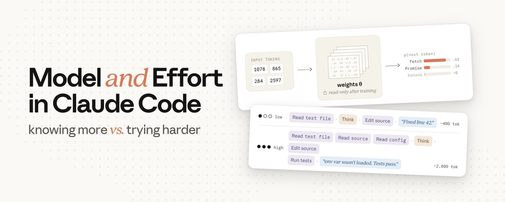
Claude의 추론 능력을 향상시키는 두 가지 요소인 모델과 노력 단계의 역할을 구분하는 방법론. 모델은 AI의 유능함을 결정하고 노력 단계는 철저함을 결정하는데, 노력을 올리면 단순히 더 오래 생각하는 것이 아니라 추론, 파일 읽기, 테스트 검증, 다음 단계 진행까지 전체 작업량을 증가시킨다. 이를 통해 같은 프롬프트에서 약 7배의 토큰 증가를 얻을 수 있으며, Sonnet 5부터는 다섯 단계의 노력 수준이 지원된다.
핵심 포인트: 핵심 기여: 노력 단계 상향 시 동일 프롬프트에서 토큰 약 7배 증가 달성, 추론/도구 호출/설명 생성 전체 작업량 확대를 통해 결과 품질 향상, Sonnet 5부터 xhigh 단계 추가로 5단계 노력 레벨 제공
🔗 threads.com/@choi.openai/post/DakuhX4Dx2i…
기타 (Others)
DEVTOOLS & OPEN SOURCE
GodWeld — Advance Steel 모듈러 건축 용접 자동화 앱
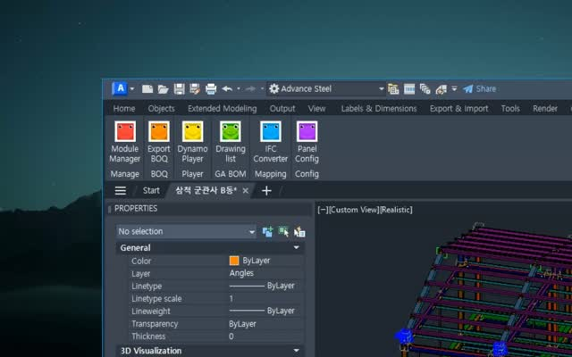
BIM 시장에서 모듈러 건축 설계 시 형강과 플레이트 용접 포인트를 일일이 수작업으로 처리해야 하는 비효율 문제를 해결한다. GodWeld는 Autodesk Advance Steel 전용 3rd party 애플리케이션으로, 형강에 인접한 모든 플레이트를 자동으로 검출하고 용접포인트를 생성하여 Assembly 단위로 묶는다. 기존 2~3시간 소요 작업을 31분 앱 개발 후 1분 실행으로 총 32분 만에 완료하며, SDK 온톨로지 팩 활용으로 AI 에이전트 기반 도메인 특화 개발의 효율성을 입증한다.
핵심 포인트: 핵심 성과: 형강 200개 기준 수작업 2~3시간 작업을 앱 생성 31분 + 실행 1분 = 총 32분으로 단축하며, SDK 온톨로지 팩 기반 개발이 단순 SDK 폴더 대비 생성 시간과 완성도를 현저히 향상시킨다.
🔗 threads.com/@logotekton/post/DazUsO5ATpz?…
기타 (Others)
pdf-inspector: OCR 없이 PDF를 분류하고 마크다운으로 추출하는 Rust 라이브러리
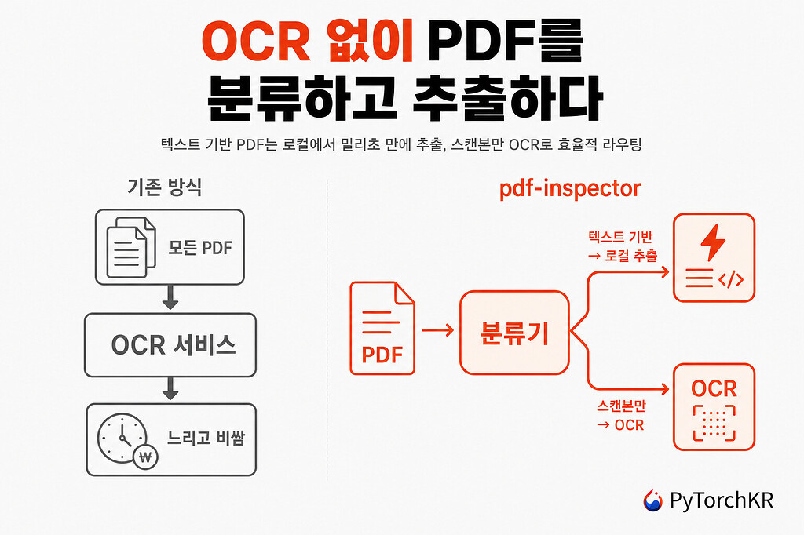
문서 처리 파이프라인에서 PDF의 타입을 구분하지 않고 모두 OCR 서비스로 보내면 불필요한 비용과 지연이 발생한다는 문제를 해결한다. pdf-inspector는 Rust로 구현된 라이브러리로, PDF가 텍스트 기반인지 스캔본인지 밀리초 단위로 판별하고, 텍스트 기반이면 OCR 없이 위치 정보를 유지한 채 마크다운으로 변환한다. Firecrawl이 개발했으며 약 54%의 PDF에 대해 외부 OCR 호출을 건너뛸 수 있다.
핵심 포인트: 핵심 성과: 텍스트 기반 PDF를 밀리초 안에 로컬에서 처리하고, 200ms 내 마크다운 변환 완료. 외부 의존성은 PDF 파싱용 lopdf 하나뿐이며, Rust 본체와 함께 Python 및 Node.js 바인딩, 명령줄 도구 제공.
🔗 discuss.pytorch.kr/t/pdf-inspector-ocr-pd…
기타 (Others)
Excalidraw — MCP 기반 에이전트 협업을 위한 무료 드로잉 툴
복잡한 아이디어를 시각화할 때 기존 도구들의 복잡성과 비용이 문제였다. Excalidraw는 완전히 무료인 드로잉 툴로, MCP 기능을 통해 AI 에이전트와의 협업을 더욱 원활하게 만든다. 사용자는 Aside 플랫폼에서 Excalidraw와 ClaudeCode를 함께 사용하여 직관적이고 효율적인 드로잉 작업을 수행할 수 있으며, 추가 비용 없이 AI 기반 협업 기능을 활용할 수 있다.
핵심 포인트: 핵심 기여: MCP 기능으로 AI 에이전트와의 협업 워크플로우를 강화하면서도 완전 무료 서비스를 제공하며, Aside와의 통합으로 ClaudeCode와의 원활한 상호작용을 실현했다.
🔗 threads.com/@unclejobs.ai/post/DawxFSwCae…
기타 (Others)
Anthropic 공식 노트북: Claude API 실전 레시피 3가지
Anthropic 공식 노트북 저장소가 48,000개 스타를 넘었으나 실제 활용 사례가 부족한 상황에서, Claude API를 즉시 적용 가능한 실전 레시피 3가지를 제시한다. 에이전트 패턴(서브에이전트, 도구 연동), RAG 및 멀티모달 통합(벡터 DB, 이미지 해석), 에이전트 SDK와 확장 사고 구현까지 노트북 단위로 완성된 코드 예제를 제공하여 개발자가 처음부터 설계할 필요 없이 바로 적용할 수 있도록 한다.
핵심 포인트: 핵심 기여: 최근 업데이트 이후 일주일 새 464개 스타 증가, 무료 API 키 발급 후 anthropicapifundamentals 코스부터 시작하여 Pinecone 벡터 DB, Voyage AI 임베딩, extended thinking 활용법까지 통합된 프로덕션급 예제 제공.
🔗 threads.com/@think.5x/post/Datk_nnkwse?xm…
기타 (Others)
Sqlsure — AI 생성 SQL의 의미론적 오류를 0.1ms 내 검출
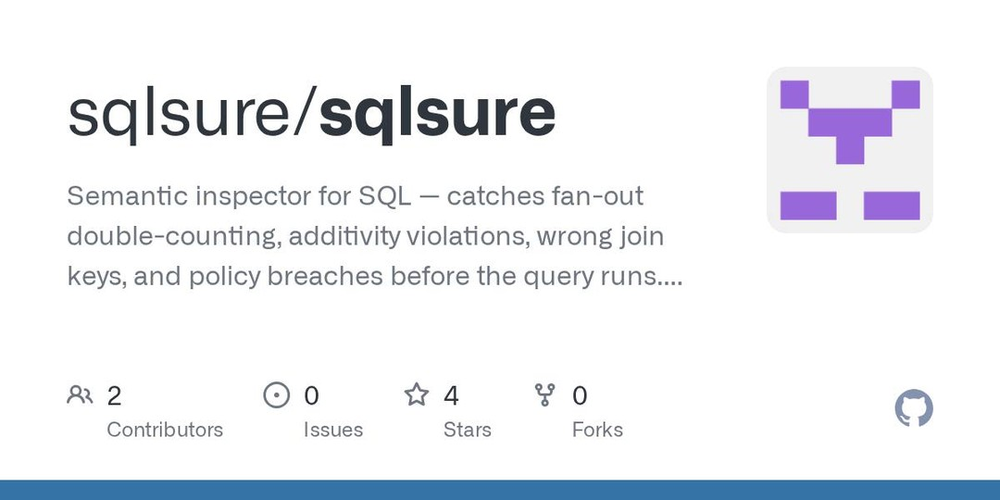
AI가 작성한 SQL 쿼리에서 문법적으로는 정상이지만 의미상 오류인 semantic error를 사전에 감지하는 도구. 기존 데이터베이스나 린터로 놓치기 쉬운 오류를 실제 데이터 접근 없이 오프라인 환경에서 0.1밀리초 만에 정확히 찾아내며, 자동 수정 기능으로 AI가 스스로 오류를 고치도록 지원한다. AI 기반 데이터 분석의 신뢰도를 높이는 필수 검증 도구로 평가된다.
핵심 포인트: 핵심 성과: 2,568개 전문가 쿼리 중 45개 오류 감지, 벤치마크 골드 답변 대비 8배 높은 오류 검출률 달성. Apache 2.0 라이선스로 GitHub에서 공개 중.
🔗 threads.com/@marco.ai.builder/post/Darm3p…
기타 (Others)
next-ai-draw-io — AI 에이전트가 조작하는 draw.io XML 기반 다이어그램 생성
Claude Code에서 자연어 명령으로 다이어그램을 생성할 때 단순 이미지 출력이 아닌 draw.io XML을 에이전트가 직접 조작 가능한 형식으로 다루는 문제를 해결한다. MCP 서버가 startsession, editdiagram, exportdiagram 도구를 제공하고, 브라우저 미리보기는 실시간 폴링으로 갱신되며, 채팅과 코딩 에이전트가 같은 다이어그램을 협력 편집한다. 이미지 기반 복제, PDF 업로드, 히스토리 복원, 클라우드 도식, 애니메이션 커넥터를 지원하고 다중 모델(Claude, GPT, Gemini, Ollama 등)을 연동한다.
핵심 포인트: 핵심 기여: draw.io XML 엄격한 구조를 LLM이 정확하게 조작 가능하도록 설계하여, 다이어그램을 정적 문서 이미지에서 에이전트가 읽고 수정하고 내보낼 수 있는 동적 작업물로 전환했다.
🔗 threads.com/@devkhpark/post/DarCyE0FJ48?x…
기타 (Others)
assimp — 40개 3D 포맷을 통합 처리하는 오픈소스 라이브러리
건설·CAD 업계에서 협력사마다 다른 3D 파일 포맷(IFC, DXF, FBX, OBJ, STL, glTF 등)을 받을 때마다 포맷별 파서를 새로 작성해야 하는 문제를 해결한다. assimp는 40여 개의 3D 파일 포맷을 하나의 통일된 데이터 구조로 읽어들이는 오픈소스 C++ 라이브러리로, BSD-3-Clause 라이선스 하에 상업 프로젝트에 자유롭게 적용할 수 있다. C++ 핵심 위에 Python, C# 바인딩을 제공하여 BIM 뷰어나 변환 도구 개발 시 포맷별 파서 작성 수고를 대폭 줄여준다.
핵심 포인트: 핵심 기여: 40개 이상의 3D 파일 포맷을 단일 통합 레이어로 처리하여 개발 생산성 향상, mesh 후처리 도구(법선 생성, 삼각형화, 정점 캐시 최적화 등) 포함.
GitHub
Cursor 3.11 — 사이드 채팅과 에이전트 대화 검색 기능 추가
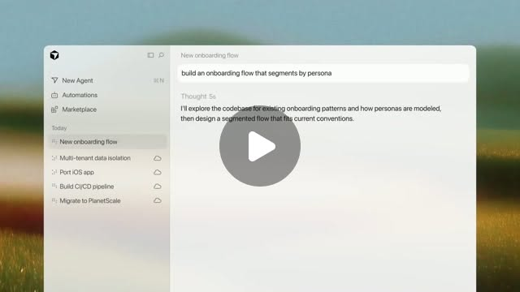
Cursor 3.11은 개발자가 메인 에이전트 작업을 중단하지 않고 병렬로 독립적인 대화를 진행할 수 있는 사이드 채팅 기능을 도입했다. 각 사이드 채팅은 메인 스레드의 컨텍스트를 받으며 @ 멘션으로 주요 내용을 원래 대화에 다시 통합할 수 있다. 함께 추가된 로컬 검색 인덱스 기반 에이전트 대화 검색 기능으로 수천 개의 이전 대화를 빠르게 찾을 수 있으며, 프로젝트 선택 화면 개선으로 에이전트 실행 절차가 간소화되었다.
핵심 포인트: 핵심 성과: 사이드 채팅으로 메인 작업 중단 없이 병렬 조사 가능, 로컬 검색 인덱스로 수천 개 에이전트 대화의 전체 본문 검색 가능
🔗 threads.com/@choi.openai/post/DapBQWvggwY…
기타 (Others)
ACadSharp — .NET에서 AutoCAD 라이선스 없이 DWG 파일 처리
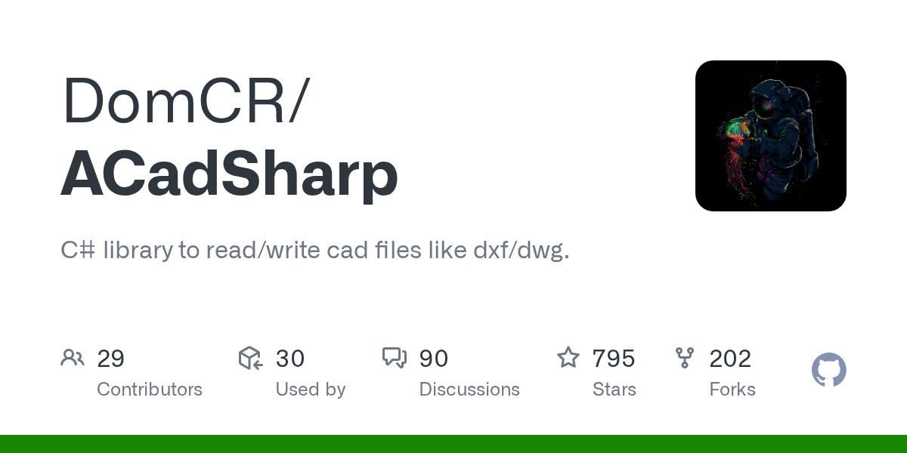
CAD 담당자들이 AutoCAD 라이선스 대기 시간으로 인한 병목 현상을 겪는 문제를 해결하는 오픈소스 라이브러리. ACadSharp는 C# 기반으로 DXF·DWG 파일을 직접 읽고 쓸 수 있으며, 블록·레이어·스타일 등 테이블 요소와 엔티티의 기하 정보까지 코드로 추출 및 수정 가능하다. AutoCAD를 실행하지 않고 배치 스크립트로 수백 장의 도면을 한 번에 처리할 수 있으며, AC1009부터 AC1032까지 광범위한 DWG 포맷을 지원하고 MIT 라이선스로 사내 파이프라인에 제약 없이 적용할 수 있다.
핵심 포인트: 핵심 성과: AutoCAD 없이 .NET·C# 환경에서 DWG 파일 자동화 처리 가능, AC1009~AC1032 포맷 읽기·쓰기 지원, MIT 라이선스로 상용 파이프라인 통합 제약 없음, v3.6.35 최신 버전으로 지속적인 관리 중.
GitHub
COMPAS: 설계부터 로봇 제작까지 통합하는 오픈소스 BIM 프레임워크
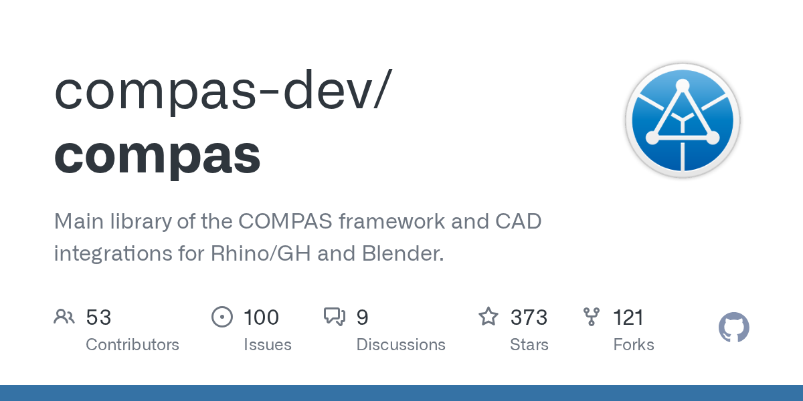
기존 오픈소스 BIM 도구는 모델 읽기, 쓰기, 검증에만 제한되는 반면, COMPAS는 설계·해석·로봇 패브리케이션까지 전 단계를 하나의 파이썬 생태계로 통합한다. Rhino, Grasshopper, Blender 같은 CAD 도구와 Abaqus, ANSYS, SOFISTIK 같은 구조해석 소프트웨어, 그리고 로봇 운영체제(ROS)를 모두 연결하여 설계 데이터를 그대로 로봇 팔 제작 공정에 넘길 수 있는 워크플로우를 제공한다.
핵심 포인트: 핵심 기여: MIT 라이선스 오픈소스로 373개 스타, 8,600개 이상 커밋을 보유하며 최신 릴리스(2.15.1)가 2024년 3월에 출시된 활발하게 유지되는 프로젝트. 로봇 패브리케이션 기능만 분리한 서브패키지 COMPAS FAB도 제공하여 설계부터 제작까지 하나로 잇는 통합 오픈소스 프레임워크의 국내 첫 소개이다.
🔗 github.com/compas-dev/compas
GitHub
tian — Claude 코드 세션을 위한 네이티브 macOS 터미널 에뮬레이터
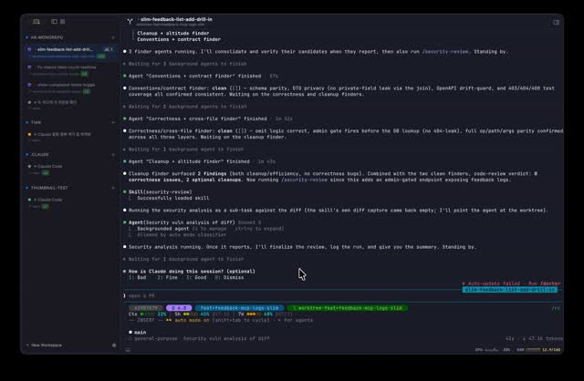
여러 Claude Code 세션을 동시에 실행할 때 각 세션의 진행 상황을 추적하기 어려운 문제를 해결하는 SwiftUI 기반 터미널 에뮬레이터. Ghostty를 터미널 코어로 임베딩하고, 사이드바에서 모든 세션의 실시간 상태, git 브랜치, diff를 한눈에 볼 수 있으며, 키보드 단축키로 세션 간 네비게이션을 지원한다. 각 세션이 독립적인 git 워크트리로 백업되어 병렬 작업이 가능하다.
핵심 포인트: 핵심 성과: 사이드바 기반 실시간 세션 상태 모니터링으로 다중 Claude Code 세션 관리 효율화, CLI를 통해 세션 내부에서 UI 제어 가능한 자동화 기능 제공
🔗 github.com/psycoder-sup/tian
GitHub
ENGINEERING
AWS & Unsloth — 동적 양자화로 LLM 서빙 비용 획기적 절감
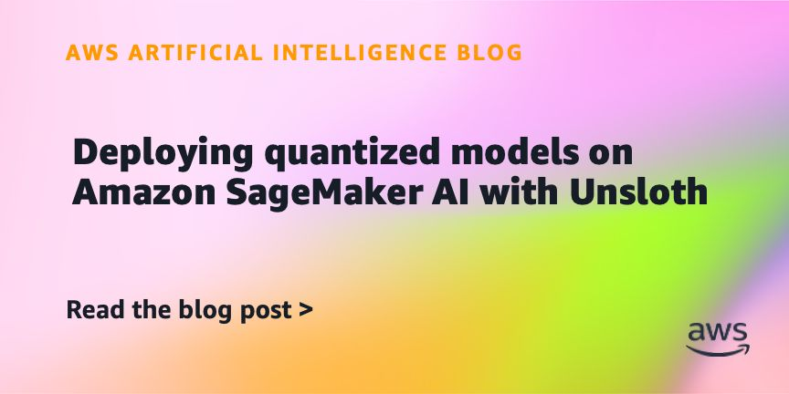
대규모 언어모델을 16비트 정밀도로 서빙할 때 발생하는 높은 GPU 비용 문제를 해결하기 위해 AWS와 Unsloth가 동적 양자화 배포 가이드를 제시했다. 레이어별 민감도를 분석하여 중요도에 따라 16비트와 4비트를 선택적으로 적용하는 방식으로, 모델의 정확도 손실을 최소화하면서 메모리 사용량을 크게 줄이고 인스턴스 비용, 스토리지, 시작 시간을 동시에 절감할 수 있다.
핵심 포인트: 핵심 기여: 획일적 압축 대신 레이어별 민감도 기반 혼합 정밀도 양자화(16-bit/4-bit)로 정확도 유지 및 메모리 사용량 대폭 감소, 대규모 배포 시 인스턴스 비용 절감 효과 극대화
🔗 aws.amazon.com/ko/blogs/machine-learning…
기타 (Others)
PRODUCT & INDUSTRY
Gemini Spark — AI 에이전트 기능 macOS 출시 및 Computer Use 통합
구글이 개인 AI 에이전트인 Gemini Spark를 macOS에 출시하고 Computer Use 기능을 Gemini 3.5 Flash에 통합했다. 사용자는 24시간 백그라운드에서 AI가 파일 정렬, 문서 생성, 업무 자동화 등의 작업을 수행하도록 지시할 수 있으며, Google Workspace와의 연동이 강화되어 Google Docs 편집과 댓글 확인이 가능해졌다. 또한 AI가 화면을 보고 클릭, 스크롤, 입력 등의 UI 행동을 제안하는 Computer Use 기능으로 기업 환경의 업무 자동화 성능이 개선되었다.
핵심 포인트: 핵심 성과: Gemini Spark가 macOS에서 desktop 파일 및 앱 전반에 걸친 자동화 작업을 지원하고, Gemini 3.5 Flash에 Computer Use 기능이 통합되어 브라우저, 모바일, 데스크톱 환경에서 UI 기반 작업 자동화가 가능해졌다.
🔗 blog.google/innovation-and-ai/products/ge…
기타 (Others)
건설사 AI 전환 — R&D 투자는 11.4% 감소

건설사들이 AI와 스마트건설 전환을 강조하고 있으나 실제 연구개발 투자는 감소하는 역설이 발생했다. 삼성물산을 제외한 상장 건설사 5곳의 2025년 R&D 예산이 3859억 원으로 전년 4358억 원 대비 11.4% 줄어들었다. 업체별로 편차가 크게 나타났는데 DL이앤씨는 49.3% 감소, GS건설과 현대건설도 감소한 반면 현대산업개발과 대우건설은 증가하며 기술 투자 의지의 온도차가 뚜렷했다.
핵심 포인트: 핵심 발견: 주요 상장 건설사 5곳의 2025년 R&D 투자가 전년 대비 11.4% 감소(3859억 원)했으며, 이는 AI·스마트건설 강조와 실제 투자 추진 간 불일치를 나타낸다. 업체별로는 DL이앤씨 49.3% 감소에서 현대산업개발 13.0% 증가까지 편차가 크게 나타났다.
🔗 newspim.com/news/view/20260708001082
기타 (Others)
ChatGPT Work — 오픈AI 에이전트 기반 업무 자동화 플랫폼 출시
기존 챗GPT가 질문에 답변만 제공하던 것과 달리, 오픈AI가 ChatGPT Work를 통해 앱과 파일을 가로질러 직접 행동하고 장시간 프로젝트를 자동으로 완수하는 에이전트 기능을 추가했다. 내부 코딩 에이전트 Codex 기술을 탑재한 이 플랫폼은 마케팅, 재무, 영업 등 비개발자 100만 명 이상이 업무 자동화 도구로 사용 중이며, 오픈AI 직원들의 99.8% 토큰 출력이 Codex에서 나올 정도로 조직 내 채택률이 높다.
핵심 포인트: 핵심 성과: 비개발자 사용자 증가 속도가 개발자의 3배이며, Codex 주간 활성 사용자 500만 명 중 100만 명 이상이 소프트웨어 개발 외 업무에 적용 중. 오픈AI 내부 거의 모든 팀이 Work와 Codex를 주력 도구로 전환하여 AI 활용 단위가 ‘질문’에서 ‘위임’으로 패러다임 전환.
🔗 threads.com/@choi.openai/post/DalmXiGmM94…
기타 (Others)